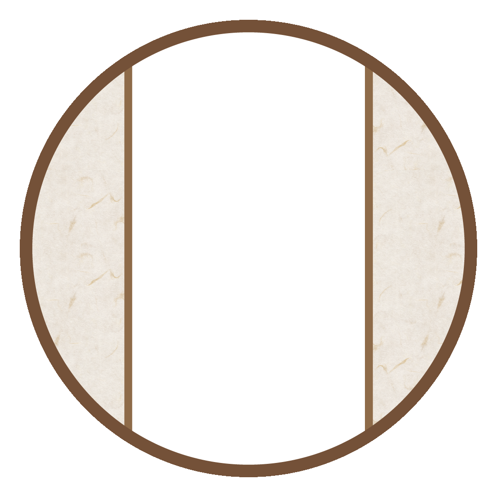
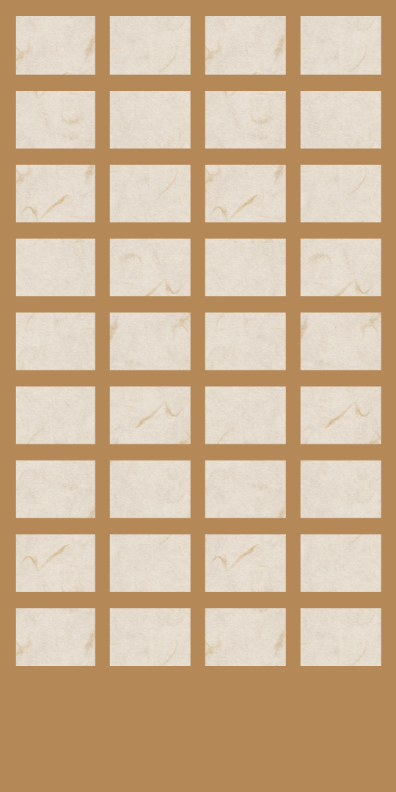

舞台 刀剣乱舞

虚伝 燃ゆる本能寺
・天正10年（1582年）
・安土桃山時代
・本能寺の変

虚伝 燃ゆる本能寺～再演～
・天正10年（1582年）
・安土桃山時代
・本能寺の変
「初演と何かが違う？」
義伝 暁の独眼竜
・慶長5年（1600年）
・安土桃山時代
・関ヶ原の戦い
外伝 此の夜らの小田原
・小田原征伐（天正18年、1590年）前
・安土桃山時代
ジョ伝 三つら星刀語り
・天正18年（1590年）
・安土桃山時代
・小田原征伐
悲伝 結いの目の不如帰
・永禄8年（1565年）
・室町時代（戦国時代）
・永禄の変
慈伝 日日の葉よ散るらむ
西暦2205年
・新たな本丸への引っ越し
維伝 朧の志士たち
・文久3年（1863年）
・江戸時代
・文久土佐
綺伝 いくさ世の徒花 改変 いくさ世の徒花の記憶
・慶長元年（1596年）
・安土桃山時代から江戸時代
・慶長熊本
天伝 蒼空の兵 -大坂冬の陣-
・慶長19年（1614年）
・江戸時代
・大坂冬の陣
无伝 夕紅の士 -大坂夏の陣-
・慶長19年（1614年）
・江戸時代
・大坂夏の陣
綺伝 いくさ世の徒花
・慶長元年（1596年）
・安土桃山時代から江戸時代
・慶長熊本
禺伝 矛盾源氏物語
・平安時代
・源氏物語の世界？
七周年感謝祭 -夢語刀宴會-
・西暦2205年
・審神者の夢の中
山姥切国広 単独行 -日本刀史-
・？？？年
・？？時代
・？？？
心伝 つけたり奇譚の走馬灯
・慶応４年７月（1596年）
・江戸時代
・慶応甲府
© SampleSite / Icons by icons8.com